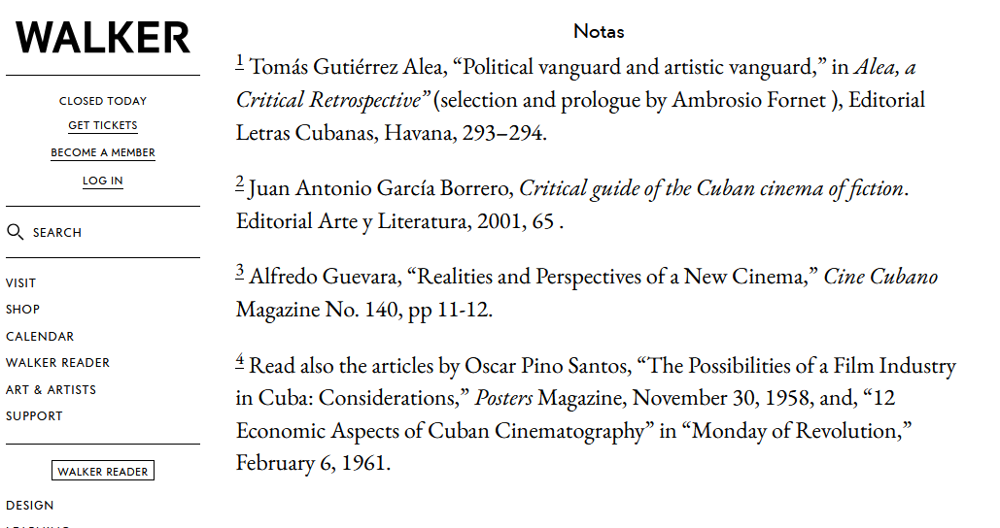
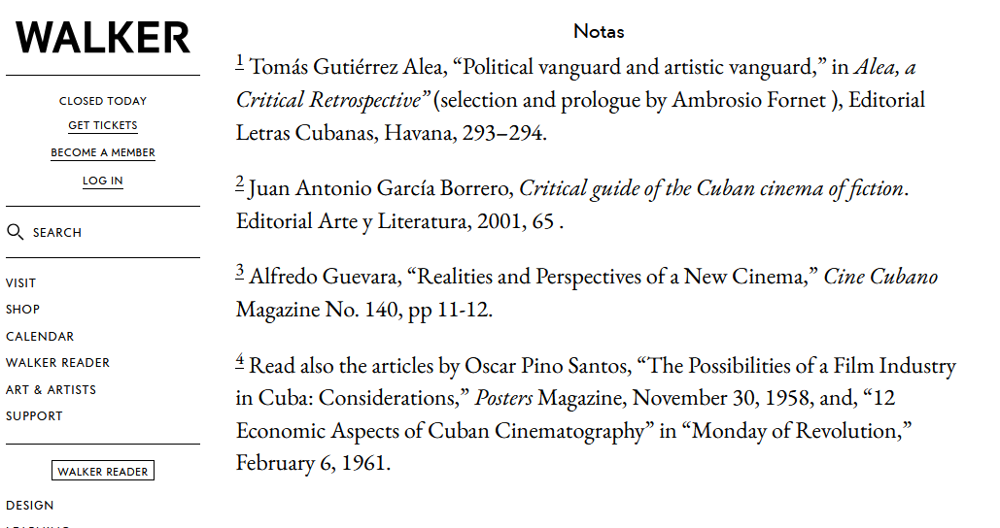
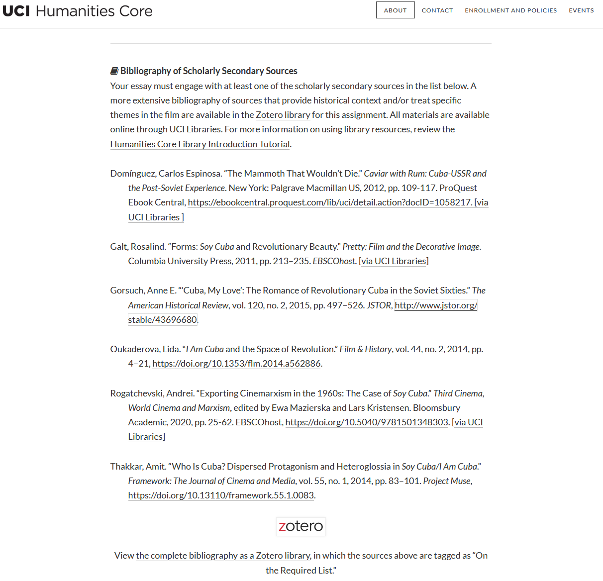
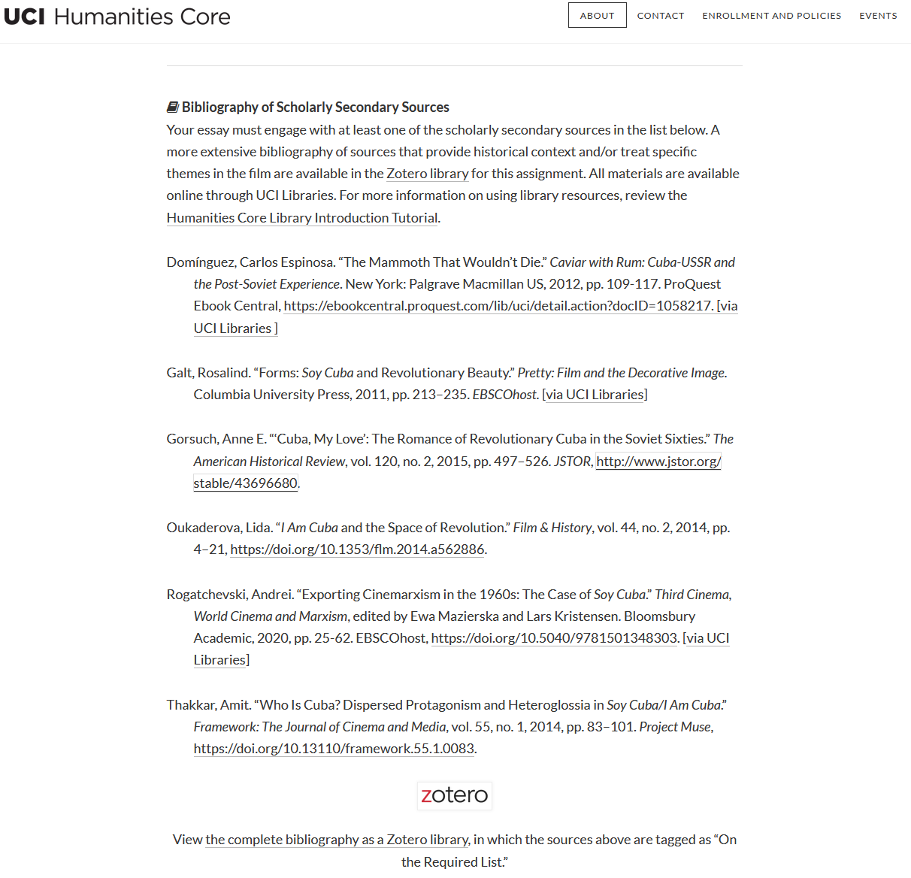
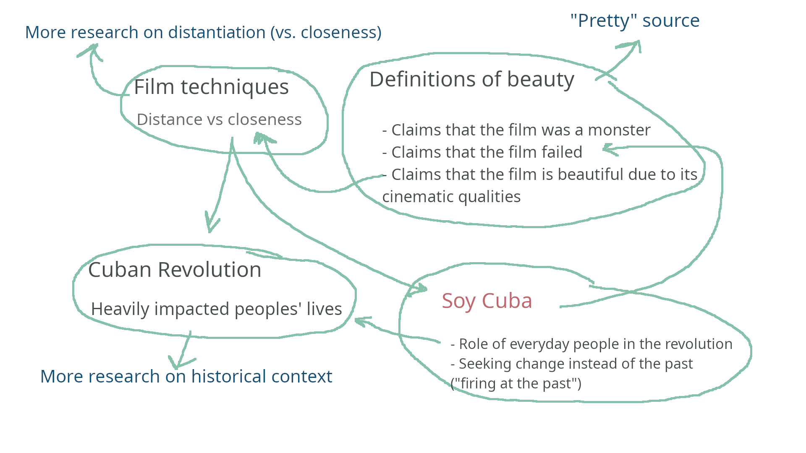

Caden Lee's Digital Archive
W O R L D B U I L D I N G - 2 0 2 5
# Tackling Secondary Sources (2025/02/21)
Though the Humanities Core lectures helped me understand parts of Mikhail Kalatozov's Soy Cuba (1964), the film still left me with many questions. One way to seek answers to these questions is using secondary sources, which provide more historical context, analysis, and interconnections on a level above the original work.
Interested in the aesthetic of the film, I first turned to Rosalind Galt's book Pretty: Film and the Decorative Image, which includes a section analyzing Soy Cuba's varying degrees of success and how it portrays the beauty of revolution. However, secondary sources themselves require active reading, too.
# Selecting a Secondary Source
Without a list or idea
I often create, even if just mentally, a list of key terms, dates, and ideas surrounding my topic before looking for sources. For instance, I might list:
- 1964 (the date of Soy Cuba), or the 1960s in general
- Soy Cuba
- Film techniques
- Relations between Cuba, the US, and the USSR
- The Cuban Revolution
- Perception of Cuban culture
I can then combine various terms from this list and use general search engines (like Google) or library search features (like UCI's library websites) to find sources. Sometimes, websites themselves may not be the best sources, but they could list more academic sources somewhere on the page.
 Above (image 1): the sources listed on a page from the Walker Art Center
When finding sources online, it is a good idea to think about their credibility and bias: I tend to look for the purpose of an article or paper; the author, and what they might think about the subject; and the goals of the website it is hosted on.
For instance, this article from Cuba Private Travel, a travel agency, that I found in a Google search for "1960s film techniques in Cuba" may not be a reliable source because it was likely created partly to advertise their tourism services.
I often create, even if just mentally, a list of key terms, dates, and ideas surrounding my topic before looking for sources. For instance, I might list:
- 1964 (the date of Soy Cuba), or the 1960s in general
- Soy Cuba
- Film techniques
- Relations between Cuba, the US, and the USSR
- The Cuban Revolution
- Perception of Cuban culture
I can then combine various terms from this list and use general search engines (like Google) or library search features (like UCI's library websites) to find sources. Sometimes, websites themselves may not be the best sources, but they could list more academic sources somewhere on the page.
 Above (image 1): the sources listed on a page from the Walker Art Center
When finding sources online, it is a good idea to think about their credibility and bias: I tend to look for the purpose of an article or paper; the author, and what they might think about the subject; and the goals of the website it is hosted on.
For instance, this article from Cuba Private Travel, a travel agency, that I found in a Google search for "1960s film techniques in Cuba" may not be a reliable source because it was likely created partly to advertise their tourism services.
Choosing from a list
Luckily, this unit's essay prompt gave a helpful list of seconary sources relating to the film.
1. Titles: does any title catch my eye? What specific topics do I think the source will cover, or is the title very general? I chose to look into Pretty because it sounded like it dealt heavily with aesthetic aspects of film.
2. Dates: what are the oldest and newest sources, and how do they relate to the topic being covered? All the sources in the list were relatively recent, in the past decade or two, compared to how long ago Soy Cuba was made.
3. Length and density: if a source looks like it will be a quick read, I'm more likely to check it out first, but if it looks dense, I would need to look into it more before starting.
 Above (image 2): a screenshot of the main secondary sources provided with the Essay 4 assignment
Luckily, this unit's essay prompt gave a helpful list of seconary sources relating to the film.
1. Titles: does any title catch my eye? What specific topics do I think the source will cover, or is the title very general? I chose to look into Pretty because it sounded like it dealt heavily with aesthetic aspects of film.
2. Dates: what are the oldest and newest sources, and how do they relate to the topic being covered? All the sources in the list were relatively recent, in the past decade or two, compared to how long ago Soy Cuba was made.
3. Length and density: if a source looks like it will be a quick read, I'm more likely to check it out first, but if it looks dense, I would need to look into it more before starting.
 Above (image 2): a screenshot of the main secondary sources provided with the Essay 4 assignment
Audience: to determine who the audience might be, I tend to think about where I found the source, its style, and what the source covers. Because this book is provided in the UCI libraries, I imagine the book is for an audience of film critics or others studying film; this is supported by its academic tone, which I notice as I read.
Central claims: I mostly identify these claims while reading (see below)
# Reading and Notetaking
Though I typically prefer to download a PDF, if allowed, and use my preferred PDF viewer for reading, some sources are only available on websites. Regardless, I rarely annotate directly on the document.
Because of my experience in computer science, I like to take notes in a standardized plain-text format called Markdown that is simple, can be easily shared, and doesn't take up much storage space. Splitting the notes up into the sub-sections of the chapters helps me understand the organization the author wants to convey.
When I find a key piece of evidence, important point, or guiding piece of information, I summarize or quote it in the corresponding section of my notes and make sure to note the page number. If I find words I'm uncertain about or that seem very particular to the source, I bold them by putting double asterisks around them (see the example below). Sometimes, I need to define terms or ideas, often using a Wikipedia page and including a link so I can access it again. Of course, to actually use that material in an essay, I would have to check Wikipedia's sources section and use a source from there.
My typical notes look like:
# Rosalind Galt - Pretty: Film and the Decorative Image (Chapter 6)
- <https://uci.primo.exlibrisgroup.com/discovery/fulldisplay
context=L&vid=01CDL_IRV_INST:UCI&search_scope=DN_Filtered&tab=
Everything&docid=alma991035521465804701>
## Introduction
- 214: some critics call the film "monstrous" because of its failure
- 214: "In this chapter, I question this received wisdom that the film is a misbegotten monster, arguing that **anti-pretty discourse** has constrained our historical perspective"
- Connect to the book's notion of "pretty"
- 214: (Thesis?) "Soy Cuba nonetheless weaves a revolutionary vision out of the cloth of beautiful cinematic form"
## Soy o No Soy Cuba?
- 214: the re-release back cover suggests the film was a failure, vs positive reviews from watchers
- 215: evidence that it actually played for 2 weeks, longer than most
- 217: some reviewers admire its cinematic quality: Beltran says it uses "acercamiento"/closeness instead of **Brechtian distanciation**
- <https://en.wikipedia.org/wiki/Distancing_effect>
- (I would continue notetaking here)
## Revolutionary Closeness / Transnational Distance
- (I would continue notetaking here)
- <https://uci.primo.exlibrisgroup.com/discovery/fulldisplay
context=L&vid=01CDL_IRV_INST:UCI&search_scope=DN_Filtered&tab=
Everything&docid=alma991035521465804701>
## Introduction
- 214: some critics call the film "monstrous" because of its failure
- 214: "In this chapter, I question this received wisdom that the film is a misbegotten monster, arguing that **anti-pretty discourse** has constrained our historical perspective"
- Connect to the book's notion of "pretty"
- 214: (Thesis?) "Soy Cuba nonetheless weaves a revolutionary vision out of the cloth of beautiful cinematic form"
## Soy o No Soy Cuba?
- 214: the re-release back cover suggests the film was a failure, vs positive reviews from watchers
- 215: evidence that it actually played for 2 weeks, longer than most
- 217: some reviewers admire its cinematic quality: Beltran says it uses "acercamiento"/closeness instead of **Brechtian distanciation**
- <https://en.wikipedia.org/wiki/Distancing_effect>
- (I would continue notetaking here)
## Revolutionary Closeness / Transnational Distance
- (I would continue notetaking here)
# Bringing Things Together
The final step is to identify useful topics to cover in my essay or project and find evidence to inform these topics.
I can go back to my notes and check out key points and ideas to use in my work. The bolded terms are especially likely to be helpful, because if they were unfamiliar to me,
this means the source is offering new information I wouldn't have found elsewhere. Because I included page numbers in the notes, I can look back at anything interesting and find more details, like other sources used.
I can also then connect these ideas back to my other secondary sources, and to my original source, to get a better understanding of the topic as a whole.
I can also then connect these ideas back to my other secondary sources, and to my original source, to get a better understanding of the topic as a whole.
 Above (image 3): a frame from Soy Cuba, the original source
Above (image 3): a frame from Soy Cuba, the original source

Above (image 4): a simple sketch I made of the interconnected ideas found in just that one section of the chosen secondary source alone, suggesting ways that I could pursue further research
Image credits (in order, starting with image 1):
1. A screenshot of the webpage "Cuban Cinema of the Sixties: From Myth to Reality", an article from the Walker Art Center in Minneapolis, as of February 11, 2025
2. A screenshot of the prompt for Essay 4 of UCI's 2024-25 Humanities Core program, as of February 11, 2025
2. A frame from Mikhail Kalatozov's Soy Cuba (1964) featured in a review from the Santa Fe Reporter
4. Sketch created by me using the GNU Image Manipulation Program
1. A screenshot of the webpage "Cuban Cinema of the Sixties: From Myth to Reality", an article from the Walker Art Center in Minneapolis, as of February 11, 2025
2. A screenshot of the prompt for Essay 4 of UCI's 2024-25 Humanities Core program, as of February 11, 2025
2. A frame from Mikhail Kalatozov's Soy Cuba (1964) featured in a review from the Santa Fe Reporter
4. Sketch created by me using the GNU Image Manipulation Program
All code (software and associated documentation files) is © 2025 Caden Lee under the MIT license (source).
Analysis on this digital archive is written by Caden Lee, unless stated otherwise.
All referenced works (images, websites, quotes, etc.) not by me belong to their respective creators and are used here for commentary and educational purposes.
Last updated: 2025/02/11
All referenced works (images, websites, quotes, etc.) not by me belong to their respective creators and are used here for commentary and educational purposes.
Last updated: 2025/02/11